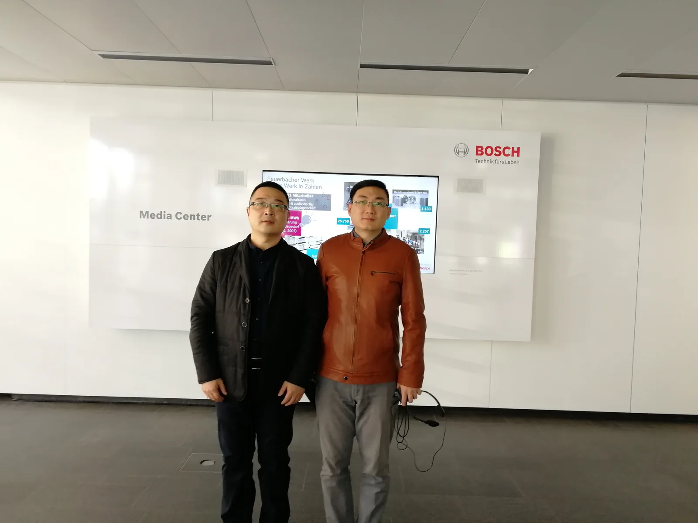
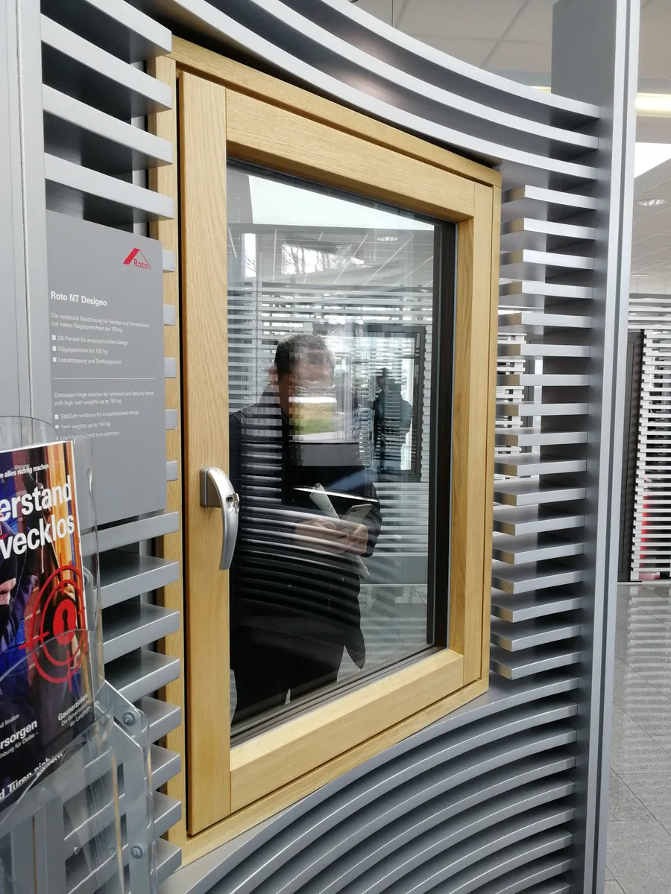
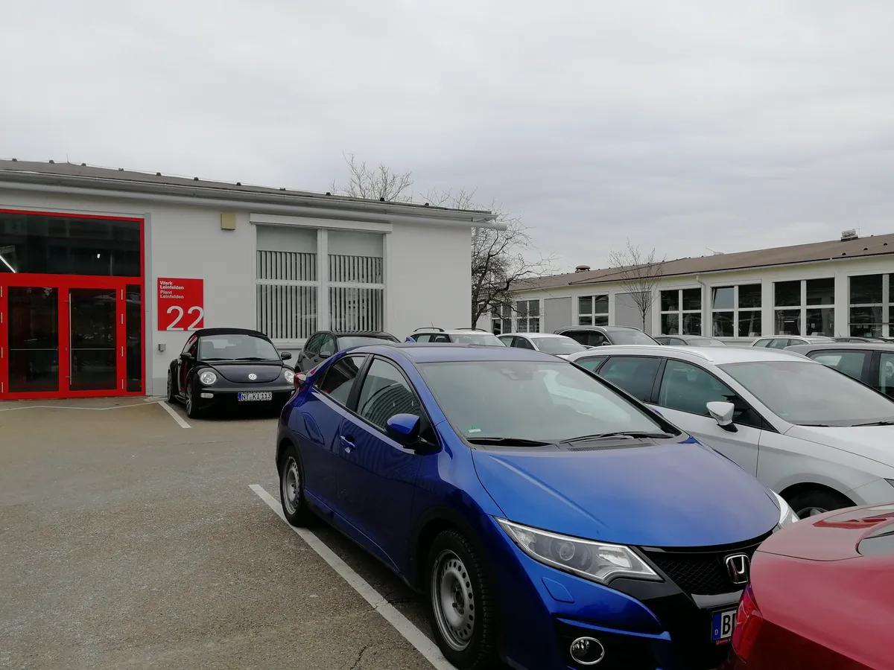
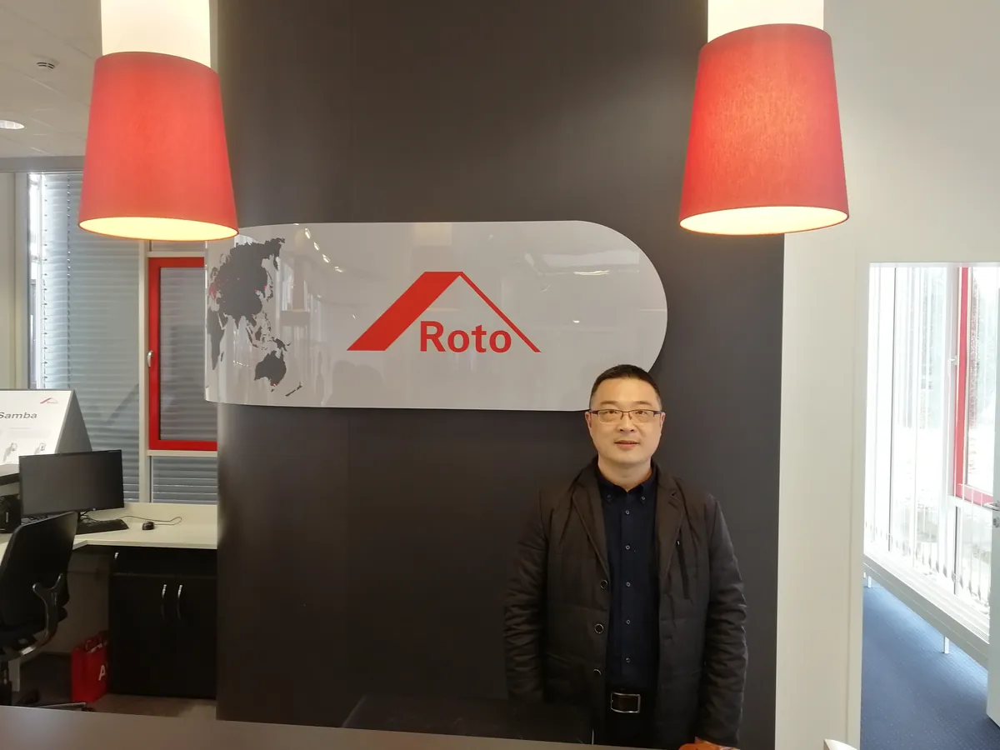
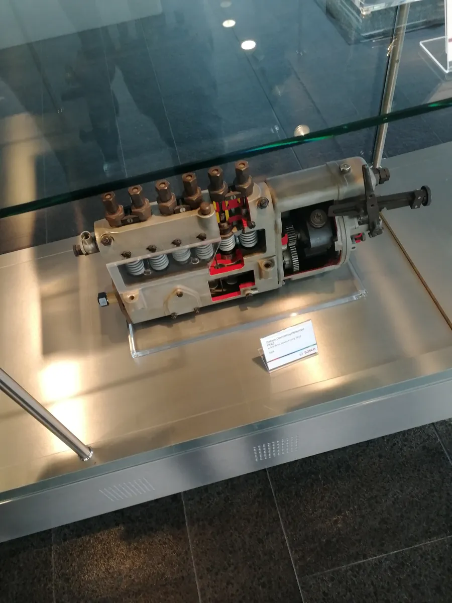

斯图加特·诺托（第三次）：从"创纪录"到"不满意"，两年里公司发生了什么
Roto in Stuttgart, the third time — from 'record year' to 'not satisfied', what changed in two years.

（2016 年 · 德国 · 斯图加特 · 诺托 Roto 总部）
这是第三次回到诺托总部。查了 2014 到 2016 这两年公司层面披露的信息，变化比想象中大——而且这次不是「新产品」驱动的变化，是一段实打实的下行周期。
一条完整的下坡曲线
先看数字：2013 年是诺托的历史纪录年，营收 658 百万欧元；但 2014 年营收回落到 641 百万欧元，已经从纪录年掉下来了；进入 2016 年，前三季度营收约 4.8 亿欧元，公司对全年的预期是「勉强追平上一年 620 百万欧元左右的水平」，管理层自己给出的措辞是——整体盈利状况「不尽如人意」。也就是说，你这三次回总部的时间点，刚好覆盖了诺托从「创纪录」到「增长放缓」再到「承认不满意」这样一条完整的下坡曲线。


下行周期里，诺托选择了连续收购
但公司应对下行周期的方式很值得记一笔：诺托没有收缩，反而在这两年里连续做了三笔收购——2015 年 10 月宣布收购荷兰密封件企业 Deventer 集团（旗下还有波兰、俄罗斯的公司），自 2016 年 1 月 1 日起并表；2016 年又收购了丹麦五金企业 Peder Nielsen 的工业部门；同一时期，诺托还把中国宁波的 Union Ltd 收入麾下，正式把生产网络延伸进了中国市场。财务负责人当时的原话逻辑是：即便在核心区域市场承压的阶段，还能完成重要收购，这本身就是对客户的一种「稳定性证明」——换句话说，诺托选择用「逆周期并购」的方式回应市场下滑，而不是收缩过冬。
这里有个细节我想单独拎出来讲：2016 年被诺托收进版图的 Union Ltd，总部就在宁波。这意味着当你 2016 年这次站在斯图加特总部里的时候，诺托刚刚在中国落下了一枚新的棋子——你在总部感受到的「市场不好做」，和公司同一时间在中国下的这一步棋，其实是同一盘棋的两面：一边是欧洲传统市场增长乏力，一边是继续往中国这样的新兴市场扩张产能。


真正的全球化企业穿越周期，靠的不是在一个市场里死扛，是让不同市场的涨落互相对冲。
——董立鑫 海鑫汇创始人兼执行总裁，新加坡世贸秘书长兼首席运营官
一个后见之明的预告
再往后看一步，也算是个预告：诺托真正意义上的产品级大动作，要等到 2017 年 11 月才发布——新一代五金系统 Roto NX，而且这款系统在设计过程中收集反馈的一个重要节点，正是你参加过的 2016 年那届 FENSTERBAU FRONTALE 展会，诺托在会上和来自美国、俄罗斯、波兰、墨西哥等国家的 90 多个客户群体做了访谈。也就是说，你这次在纽伦堡展会现场的经历，很可能间接参与推动了一年后那款「诺托史上最大五金系统革新」的诞生——虽然你 2016 年当时还看不到这个结果。
本文整理自董立鑫（Bruce Dong）海外产业考察记录，首发于海鑫汇。